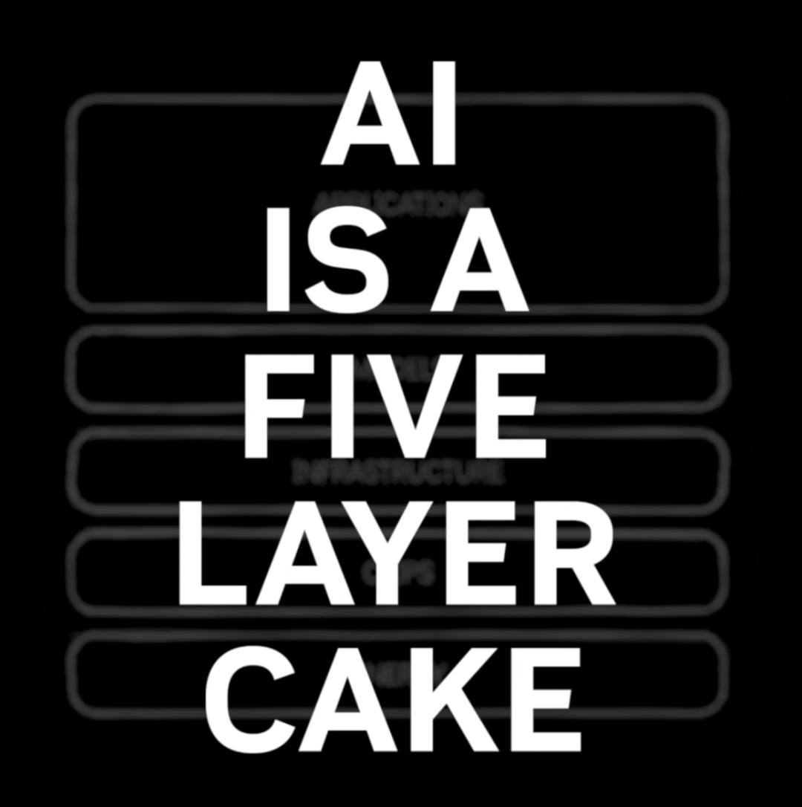
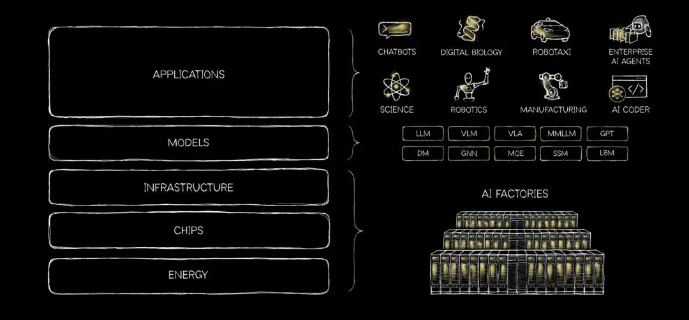
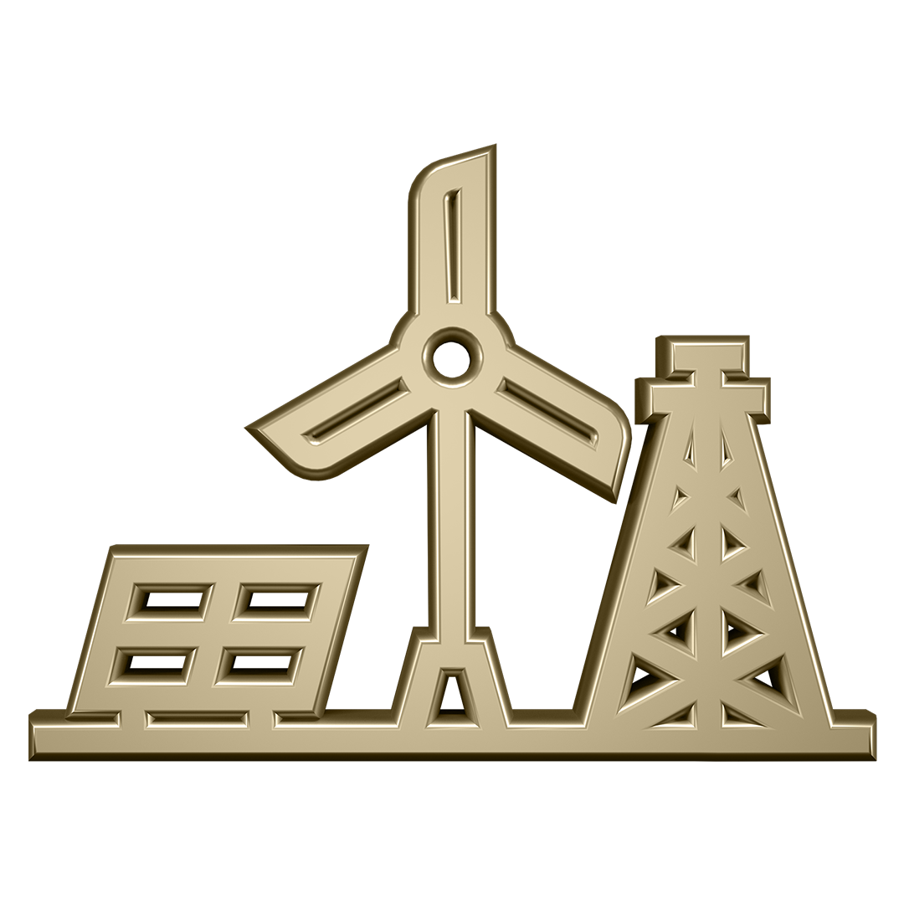
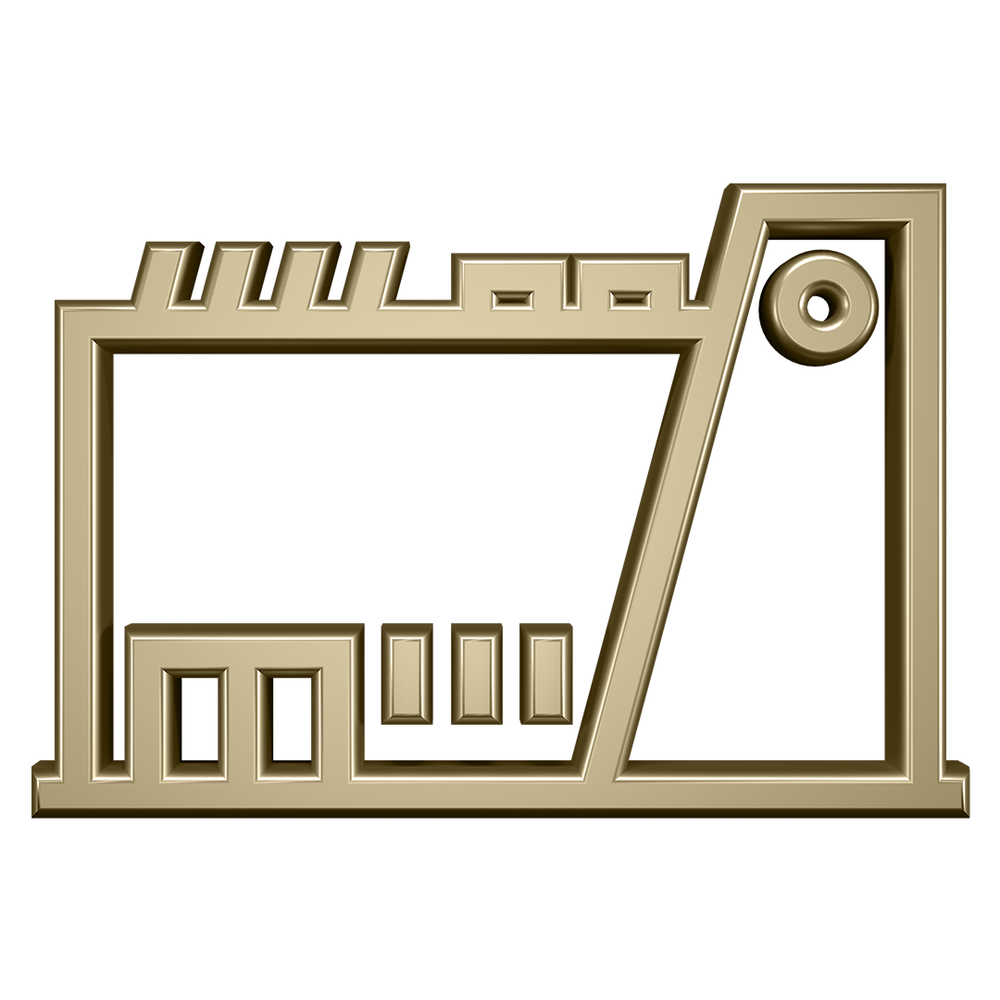
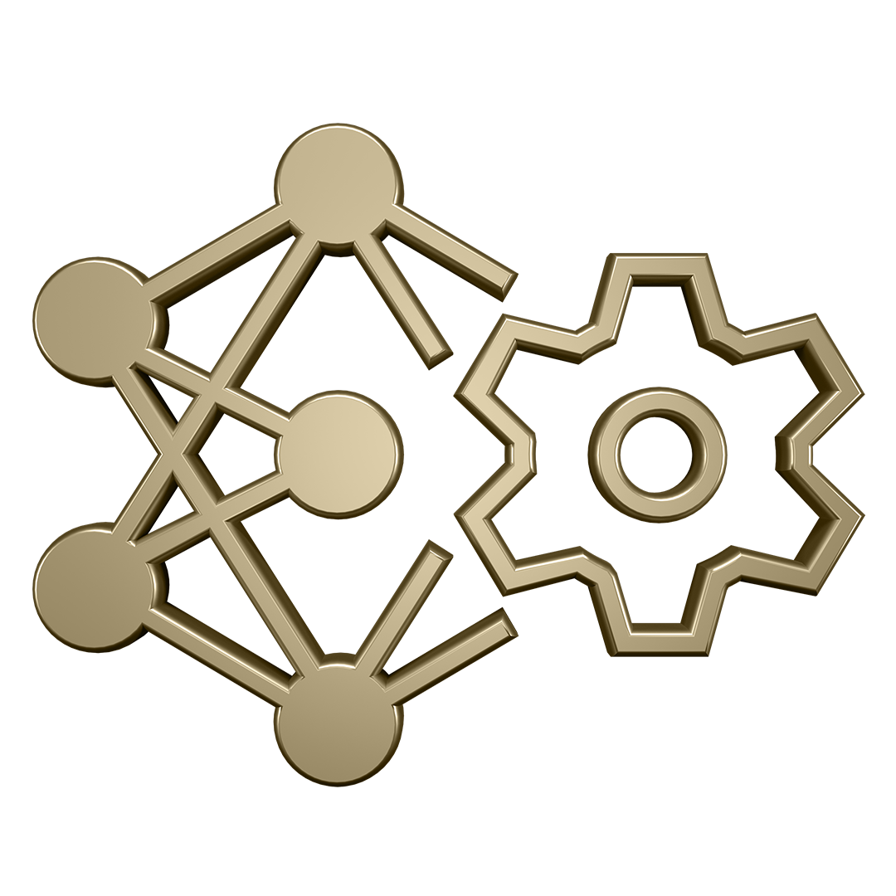
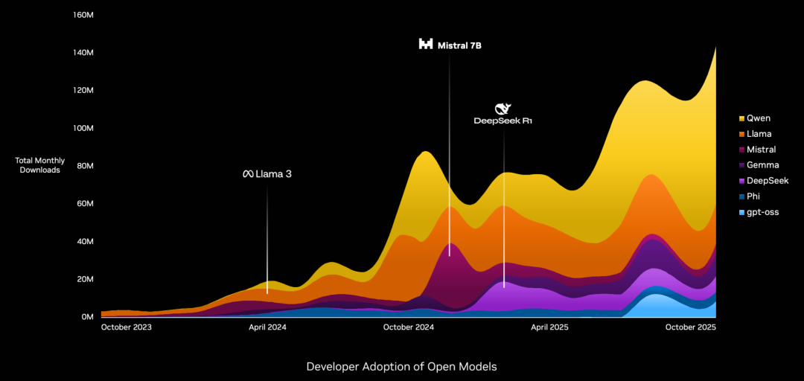

城主说|老黄今天刚刚在NVIDIA官方最新发表了一篇署名文章，这是他罕见到以个人名义的署名博文： AI is a five layer cake。预计这是老黄要为即将开始的GTC 2026造势了。
全文不算太长， 本城直接整理和大家分享中文版：
---
人工智能是五层蛋糕 | AI is a five layer cake
作者：黄仁勋
人工智能是当今塑造世界最强大的力量之一。它不是一个巧妙的应用或单一模型;它是电力和互联网等关键基础设施。
人工智能运行在真实的硬件、真实的能源和真实的经济上。它将原材料大规模转化为智能。每家公司都会用它。每个国家都会建造它。
要理解人工智能为何会以这种方式发展，有必要从基本原理出发推理，看看计算领域发生了哪些根本性的变化。

从预录软件到实时智能
在计算机历史的大部分时间里，软件都是预录的。人类描述了一个算法。电脑执行了它。数据必须被精心结构化，存储在表格中，并通过精确查询检索。SQL 变得不可或缺，因为它让这个世界变得可行。
人工智能打破了这种模式。
我们首次拥有能够理解非结构化信息的计算机。它能看到图像、阅读文字、听声音并理解意义。它能根据上下文和意图进行推理。最重要的是，它能实时生成智能。
每一个回应都是全新创建的。每个答案都取决于你提供的背景。这不是软件检索存储指令。这就是软件推理和按需生成智能。
由于智能是实时产生的，整个计算栈必须重新发明。
人工智能作为基础设施
从工业角度看人工智能，它归结为五层叠加。

能源
根基是能量。实时生成的情报需要实时产生的电力。每一个token都是电子运动、热量管理以及能量转化为计算的结果。这层面纱没有抽象层。能源是人工智能基础设施的第一原则，也是系统能够产生多少智能的约束。
芯片
能量之上是芯片。这些处理器设计用于大规模高效地将能量转化为计算。AI工作负载需要巨大的并行性、高带宽内存和快速互联。芯片层的进步决定了人工智能的扩展速度以及智能化的可负担性。

基础设施
芯片之上是基础设施。这包括陆地、电力传输、冷却、施工、网络以及将数万个处理器整合到一台机器上的系统。这些系统是人工智能工厂。它们并不是用来存储信息的。它们被设计用来制造智能。

模型
基础设施之上是模型。人工智能模型理解多种信息：语言、生物学、化学、物理、金融、医学以及物理世界本身。语言模型只是其中一类。蛋白质人工智能、化学人工智能、物理仿真、机器人和自主系统等领域正在进行一些最具变革性的工作。
应用
最前面是应用，创造经济价值。药物发现平台。工业机器人。法律副驾驶。自动驾驶汽车。自动驾驶汽车是一种集成在机器中的人工智能应用。类人机器人是一种具备在身体中的人工智能应用。同样的堆栈。不同的结果。
这就是五层蛋糕：
能源→芯片→基础设施→模型→应用。
每一次成功的应用都牵动着其底层的一切，一直延伸到维持其运转的发电厂。
我们才刚刚开始建设。我们已经投入了几千亿美元。数万亿美元的基础设施仍需建设。
在全球范围内，我们看到芯片工厂、计算机组装厂和人工智能工厂以前所未有的规模建设。这将成为人类历史上最大规模的基础设施建设。
支持这次建设所需的劳动力巨大。人工智能工厂需要电工、水管工、管道工、钢铁工人、网络技术员、安装工。
这些都是技术高、高薪的工作，但却非常稀缺。参与这一转型不需要计算机科学博士学位。
与此同时，人工智能正在推动知识经济的生产力。以放射学为例。人工智能现在协助读取扫描，但对放射科医生的需求仍在增长。这并不矛盾。
放射科医生的职责是照顾患者。读取扫描是其中一项任务。当人工智能承担更多常规工作时，放射科医生可以专注于判断、沟通和护理。医院变得更高效。他们服务更多患者。他们雇佣更多人手。
生产力创造产能。产能产能带来增长。
过去一年发生了什么变化？
在过去一年里，人工智能跨越了一个重要的门槛。模型变得足够优秀，能够大规模使用。推理能力提升。幻觉减少。接地能力显著改善。基于人工智能的应用首次开始产生真正的经济价值。
药物发现、物流、客户服务、软件开发和制造领域的应用已经展现出强烈的产品与市场契合度。这些应用在每一层都极具吸引力。
开源模型在这里起着关键作用。世界上大多数模型都是免费的。研究人员、初创企业、企业乃至整个国家都依赖开放模型参与先进人工智能。当开放模型进入前沿时，他们不仅仅是更换软件。它们会在整个堆栈中激活需求。
DeepSeek-R1就是一个强有力的例子。通过广泛提供强有力的推理模型，加速了应用层的采用，并增加了对训练、基础设施、芯片和其底层能源的需求。

这意味着什么
当你将人工智能视为关键基础设施时，其影响就变得清晰。
AI始于Transformer大型语言模型。但这远不止于此。这是一场工业转型，重塑了能源的生产和消费方式、工厂的建设方式、工作组织方式以及经济增长的方式。
人工智能工厂正在建设，因为智能现在是实时生成的。芯片正在重新设计，因为效率决定了智能的扩展速度。能量之所以成为核心，是因为它设定了智能的产生上限。应用加速是因为它们底下的模型已经跨过了一个门槛，最终在大规模中变得有用。
每一层都相互强化。
这就是为什么建筑规模如此庞大。这就是为什么它能同时影响这么多个行业。这也是为什么它不会局限于单一国家或单一行业。每家公司都会用AI。每个国家都会建造它。
我们还早。许多基础设施尚未建成。许多劳动力尚未接受培训。许多机会尚未被充分利用。
但方向很明确。
人工智能正成为现代世界的基础基础设施。我们现在所做的选择，建设的速度、参与的范围以及负责任的部署，将塑造这个时代的未来。